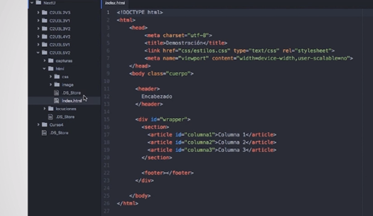

Los Media queries son una extensión muy útil de CSS que permiten detectar las características de los
dispositivos que accedan a nuestra web, y a partir de esos datos crear hojas de estilo más personalizadas,
que llevan finalmente a aumentar y mejorar la experiencia del cliente en nuestro sitio.
Los media queries, permiten que el browser decida cómo mostrar contenido dependiendo de las condiciones
que encuentre en el dispositivo y esas condiciones se dan a través de unos media types los cuales podemos
agrupar en:
Print: Vista de impresión.
min-width: tamaño mínimo en horizontal.
max-width: tamaño máximo en horizontal.
min-height: tamaño mínimo en vertical.
max-height: tamaño máximo en vertical.
orientation: Posición en la que se encuentre el dispositivo.
resolution: Tamaño ocupado por el browser en pixeles.
color: detecta si la pantalla en que se visualiza el sitio es a color o en blanco y negro.
light-level: densidad de luz del dispositivo.
Dependiendo de los media types deben crearse estilos individuales que se ajusten a las condiciones
detectadas. El dispositivo renderizará los estilos creados específicamente para cada condición.
Tiny Tweaks
Tiny Tweaks es un patrón de diseño y este define las características de una página web, tanto la
distribución de los elementos como la adaptabilidad a diversos dispositivos, estos según las reglas
establecidas previamente.
Uno como los patrones más sencillos se conoce como tiny tweaks. Este patrón se ha establecido para
sitios diseñados en una sola columna se emplea comúnmente en portales de lectura, páginas simples o
con poco contenido. Su nombre traducido significa retoques diminutos asi que como dice su nombre,
introduce pequeños cambios a partir de los tamaños que puede tomar la pantalla en la que se renderiza
el sitio web. Este patrón modifica el tamaño del texto y las imágenes, así como su ubicación en la página.
Para adoptar el patrón tiny tweaks en nuestros proyectos, basta con definir un conjunto de media queries.
Establecidos los tamaños de letra y disposición de imágenes según los requerimientos de cada tamaño de
pantalla.
En el ejemplo hay una página html con un párrafo y con una imagen. Los contenidos están definidos en una
columna. Esto significa que adoptará el patron tiny tweaks en su diseño. Al modificar el tamaño de la
ventana observamos que el texto y la imagen cambian.
Viendo el código podemos visualizar las dos medias queries para dos tamaños de pantalla y en su
interior están los pequeños cambios que se realizan a la letra y a la imagen.
Mostly Fuid es otro patrón de diseño, este patrón conserva el tamaño y organización de los contenidos
en páginas grandes y medianas, mientas que a las pequeñas las dispone verticalmente.
Este patrón se basa en un contenedor principal definido con una clase y dentro de este se ubican todos
los elementos de la página. Para aplicar este patron de diseño debemos aplicar un ancho máximo para el
contenedor principal y al aumentar el tamaño de la pantalla no alterar el tamaño de los contenidos y
adicionalmente debemos indicar en que orden se deben apilar los contenidos cuando la pantalla sea pequeña.
En nuestro ejemplo podemos observar que al alterar el tamaño de la imagen el contenedor sigue igual y
al reducir la pantalla completamente observamos que los contenidos cambian su ubicación colocándose uno
debajo de otro.
Aplicarlo en HTML y CSS
Tenemos un contenedor div con un id llamado wrapper y en los 3 bloques de tipo article que son nuestros
bloques de contenido.

En la hoja de estilos vemos la configuración del ancho del wrapper en 960px y los bloques de contenido en
porcentaje que varían según la distribución en el contenedor:
A continuación, vamos a observar 2 media queries que acomodan el tamaño del wrapper para que reduzca las
márgenes de las pantallas de 960px y las elimine por completo en las de 640px y por último en las media
queries de pantallas pequeñas 480px se ajusta el tamaño del wrapper para eliminar las márgenes y se le
indica a los elementos del contenido que ocupen el 100% del ancho del contenedor. Es decir que cada bloque
ocupe la totalidad de la pantalla. Esto generará una disposición vertical de los bloques uno debajo
del otro.
Es un patron similar a Mostly Fluid, pero a diferencia, Column Drop es muy útil para sitios distribuidos
en columnas. Permite definir las columnas principales y secundarias de la página y acomodarlas
prioritariamente a medida que se reduce la imagen. Otra de las diferencias es que no todos los
elementos reducen su tamaño sin modificar su posición, ya que algunas columnas prevalecen sobre otras.
Para aplicar este patron debemos definir la prioridad que tienen las columnas, debemos identificar el
orden de importancia según el contenido que posee cada columna.
Es un patron que se encarga de reubicar y redimensionar los elementos de una página web conforme cambia
el tamaño de la pantalla.
Layout Shifter cambia por completo la disposición del contenido, es poco común por su complejidad,
pero es el mas efectivo a los cambios de pantalla.
Para aplicar este patrón debemos determinar barios puntos de quiebre mediante media queries en tamaños
específicos de pantalla. Allí se indican los cambios de la organización de la página, modificando el
tamaño y ubicación de los contenidos. Se trata de tener un diseño diferente por cada break point.
En el siguiente ejemplo tenemos una disposición inicial de 5 bloques. Cuando reducimos el tamaño de
la pantalla y alcanzamos el primer punto de quiebre la organización de los elementos cambia. Si
continuamos reduciendo el tamaño de la ventana se alcanza el segundo break point y observamos otra
posición diferente.
Es un patron de diseño con un concepto diferente a los patrones ya estudiados. Los patrones más utilizados
intentan colocar los elementos de manera que todos quepan en la pantalla o se apilen verticalmente. En
tamaños de pantalla pequeños, el patrón Off Canvas sólo deja en pantalla un elemento y permite el acceso
a los demás mediante gestos o botones, desplazando lateralmente el contenido actual.
Este patrón en aplicaciones móviles nativas, ya que permita una fácil navegación y una manera optima
de presentar los contenidos. Sin embargo, en páginas web es uno de los patrones que menos se utiliza,
debido a su alta complejidad y dificultad en su desarrollo.
Para aplicar este patrón en una pagina web usando CSS, se deben utilizar propiedades de transformación,
animación y otras que veremos más adelante.
Este patrón se popularizo en aplicaciones móviles nativas, ya que permite una fácil navegación y una
manera óptima de presentar los contenidos. Sin embargo, en paginas web es uno de los patrones que menos
se utiliza. Debido a su alta complejidad y dificultad en su desarrollo.